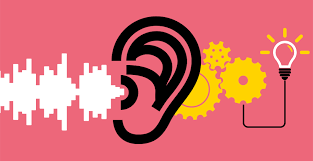
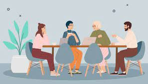

★彡 🅼🆈 🆂🅺🅸🅻🅻🆂 彡★

Coding
I code in my free times. This boosted my thinking capacity and improved problem solving skill. I code mostly in Python and oftenly in Java, C and C++.

Web Page Designing
Design beautiful web pages and websites using HTML, CSS, JavaScript and Bootstrap. Recently I started designing web pages in Canva too.

Active Listening Skill
I am able to focus on the speaker, understand the speaker, note some points and comprehend information. This skill kept me organised and punctual.

Interpersonal Skill
I am flexible and balance between work and personal aspects. This skill helped me to work efficiently with others with patience and calmness.